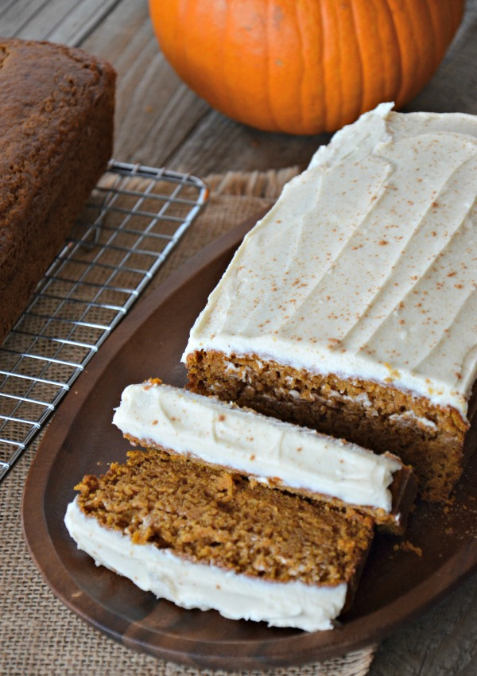

|  |
- 3 1/2 cups flour
- 3 cups white sugar
- 1 cup vegetable oil
- 4 large eggs, lightly beaten
- 1 can pumpkin puree (15 oz.)
- 2 tsp. salt
- 1 tsp. baking powder
- 1 tsp. ground nutmeg
- 1 tsp. ground allspice
- 2 tsp. cinnamon
- 1/2 tsp. ground cloves
- 2/3 cup water
|
- Preheat oven to 350°F.
- Whisk together the sugar and oil in a large bowl until well combined. Whisk in the eggs and pumpkin until combined.
- Combine the flour, salt, baking soda, baking powder, nutmeg, allspice, cinnamon and cloves in a medium bowl and whisk until well combined.
- Add half the dry ingredients to the pumpkin mixture and stir to combine. Add half the water and stir to combine. Repeat with the remaining flour and water.
- Divide the batter between the prepared loaf pans. Bake until cake tester comes out clean and the loaves are golden brown, about 1 hour.
- Let the loaves cool in the pans on a wire rack for 10 minutes. Remove from the pans and let cool completely, about 1 hour.
- Ice the loaves with cream cheese frosting. Sprinkle a light amount of cinnamon on top for decoration.
- Enjoy!
|
 Baked Goods Recipes
Baked Goods Recipes